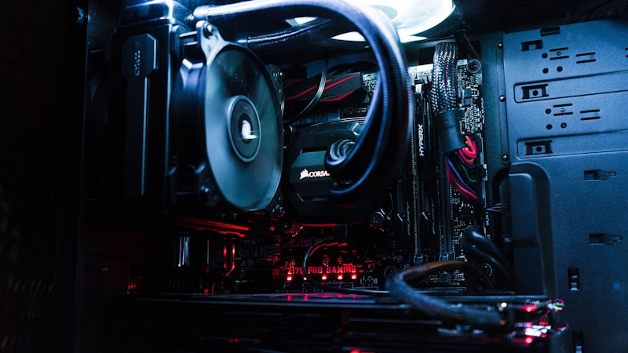

반도체 세정용 고순도 CO2 공급 비상

반도체 제조 공정 중 초임계 세정(Supercritical Cleaning)에 사용되는 고순도 이산화탄소(CO2) 공급에 이상 징후가 나타나고 있다. 초임계 CO2 세정은 반도체 회로 선폭이 10나노미터 이하 수준으로 미세화되면서 기존 습식 세정의 한계를 극복하기 위해 도입된 최첨단 세정 기술이다.
초임계 상태란 물질이 기체와 액체의 중간 상태로 존재하는 것을 말하며, CO2는 약 31.1℃, 73.8기압 조건에서 초임계 상태에 진입한다. 이 상태의 CO2는 세정력이 뛰어나면서도 표면 장력이 거의 없어, 나노미터 단위의 미세 패턴을 손상시키지 않고 오염물질을 제거할 수 있어 첨단 반도체 세정 공정에 필수적이다.
문제는 이 공정에 사용되는 CO2가 순도 99.9999%(6N급) 이상의 초고순도 등급이어야 한다는 점이다. 일반 산업용 CO2와는 전혀 다른 수준의 정제 과정이 필요하며, 이를 생산할 수 있는 공급 업체 자체가 전 세계적으로 손에 꼽힐 정도로 적다.
현재 고순도 CO2 공급 차질의 원인으로는 복수의 요인이 지목된다. 글로벌 탄소 포집·활용 기술(CCUS) 확대로 산업용 CO2 전반의 수요가 급증한 데다, 주요 생산 설비의 노후화 및 정기 점검이 겹치면서 공급 여력이 축소된 것으로 분석된다.
국내 고순도 가스 시장을 주도하는 기업으로는 SK머티리얼즈, 효성화학, 에어리퀴드코리아, 린데코리아 등이 있다. 이 가운데 일부 기업은 현재 공급 물량을 맞추기 위해 해외 협력사 물량 확보와 생산 설비 증설을 동시에 추진하고 있는 것으로 알려졌다.
삼성전자와 SK하이닉스 등 국내 주요 반도체 제조사들은 파운드리와 메모리 양산 라인 모두에서 초임계 세정 공정 비중을 늘리고 있어, CO2 공급 불안이 장기화될 경우 생산 일정에 직접적인 타격이 불가피하다. 업계 관계자는 '단기 재고 확보로 버티고 있지만, 공급 이슈가 2개월 이상 이어진다면 일부 공정 조정이 불가피할 수 있다'고 전했다.
전문가들은 이번 사태가 반도체 소재 공급망의 취약성을 다시 한번 드러낸 사례라고 지적한다. 반도체 제조에는 수백 가지 소재와 화학물질이 필요하고, 그 중 상당수가 소수의 공급사에 의존하는 구조여서 한 곳만 문제가 생겨도 연쇄 파장이 발생할 수 있다는 경고다.
해외에서도 유사한 움직임이 감지된다. 미국 인텔과 대만 TSMC도 고순도 공정 가스 조달 안정성을 높이기 위해 공급사 다변화 및 장기 구매 계약 체결에 나서고 있으며, 일부는 자체 정제 설비 구축까지 검토 중인 것으로 전해진다.
정부 차원에서도 반도체 공정 소재·가스를 국가 핵심 자원으로 지정하고, 비축 체계를 마련해야 한다는 논의가 시작됐다. 산업통상자원부는 반도체용 특수 가스를 소부장 전략 품목에 포함시켜 국산화율 제고와 공급망 다변화를 동시에 추진하는 방안을 검토 중이다.
시장조사 전문기관인 가트너는 초임계 세정 장비 및 소재 시장이 2025년까지 연평균 12% 이상 성장할 것으로 예측했다. 반도체 미세화 추세가 계속되는 한 고순도 CO2 수요도 지속적으로 증가할 전망이며, 이에 따른 안정적인 공급망 구축이 업계의 핵심 과제로 부상하고 있다.
업계는 단기적으로는 공급사 다변화와 비축 물량 확대로 리스크를 관리하고, 중장기적으로는 국내 고순도 가스 생산 인프라를 확충하는 방향으로 대응 전략을 수립하고 있다. 이번 사태를 계기로 반도체 소재 공급망 전반의 취약점을 점검하고 체계적인 대응 시스템을 갖춰야 한다는 공감대가 형성되고 있다.